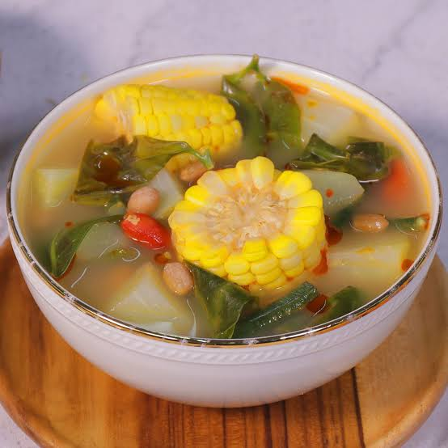

Sayur Asem

Klik disini untuk melihat cara pembuatannya.
Sayur asam atau sayur asem adalah masakan sejenis sayur yang khas Indonesia. Ada banyak variasi lokal sayur asam seperti sayur asam Jakarta (variasi dari orang Betawi di Jakarta), sayur asam kangkung (variasi yang menggunakan kangkung), dan sayur asam ikan asin.
Bahan-bahan:
1 buah jagung manis lalu potong potong
100 gram melinjo muda
2 ruas lengkuas dan memarkan
2 lembar daun salam
1 buah labu siam
5 helai kacang panjang lalu potong potong
50 gram daun melinjo muda
3 buah asam muda
1 potong gula aren
8 buah cabe merah keriting
5 buah cabe rawit merah
5 siung bawang merah
3 siung bawang putih
4 butir kemiri
1 potong terasi bakar
2 sdt garam
Langkah:
- Didihkan air secukupnya dalam panci, rebus jagung dan buah melinjo hingga lunak.
- Dalam panci terpisah, rebus asam muda dengan sedikit air hingga lunak. Angkat, remas-remas, saring airnya sekitar 100 ml.
- Bumbu: Giling atau tumbuk semau bahan bumbu hingga halus.
- Masukkan bumbu dan gula ke dalam rebusan jagung, bersama lengkuas dan daun salam.
- Tambahkan labu siam dan kacang panjang. Rebus hingga lunak.
- Masukkan daun melinjo dan air asam muda, didihkan.
- Angkat dan sajikan hangat.
Diterbitkan oleh Devi